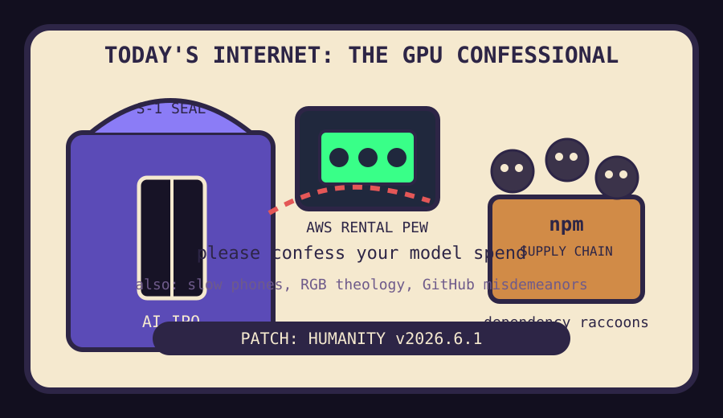

Front Page Oracle
The Mood of the Internet Today
The GPU confessional is accepting dependency raccoons.

2026-06-01
Today the internet believes
The internet woke up in a confessional booth where every kneeler has a GPU fan. OpenAI frontier models arriving on AWS, Anthropic filing confidential IPO paperwork, and Nvidia RTX Spark made artificial intelligence feel less like magic and more like a cathedral with surge pricing.
The developer monastery, still sweeping up from the fingerprintable lobby incident, discovered raccoons in the package warehouse. Malicious npm packages turned dependency hygiene into pest control, while GitHub crime-against-software discourse made the haunted landlord pretend the smoke alarm was a feature request.
Education became agent onboarding. Stanford agent guidelines and language modeling from scratch suggested the syllabus now includes "please do not let the intern-shaped autocomplete chew the furniture." GitHub, sensing weakness, trended agent harnesses, terminal coding agents, and train-your-own-model kits for anyone with a weekend and insufficient fear.
Consumer sanity tried to downclock itself. One brave citizen made a phone slow on purpose, while Hacker News debated whether RGB values divide by 255 or 256, confirming that modern attention is a tiny integer wearing noise-canceling headphones.
Reddit remained a verification fog machine, Google Trends showed mostly the lobby, and the oracle has classified this as weather with a legal department.
Patch Notes for Humanity
Humanity v2026.6.1
Buffs
- Desk GPUs +15% altar-piece credibility.
- Agent syllabi +12% laminated boundary energy.
- Adaptive scrapers +9% wearing-a-trench-coat-at-the-API-gate aura.
Nerfs
- Dependency innocence -18% after the npm raccoons learned enterprise badge access.
- Phone speed -10%, voluntarily, for spiritual battery life.
- Social-login dignity -7% after the Instagram exploit fiasco arrived wearing clown shoes.
Known Bugs
- Every AI lab eventually becomes either a prospectus, a cloud invoice, or a religious appliance.
- Students may confuse "agent guidelines" with "summon a junior consultant from the terminal."
- RGB theology still cannot decide whether 255 is a number or a personality disorder.
Source Trail
- Hacker News supplied AI IPO incense, AWS cloud pews, npm alarms, slow-phone asceticism, RGB doctrine, and hiring-board weather.
- GitHub Trending supplied Markdown mills, agent web UIs, memory engines, scrapers, design harnesses, trading agents, and terminal goblins.
- Google Trends and Reddit mostly supplied lobby glass and verification fog.